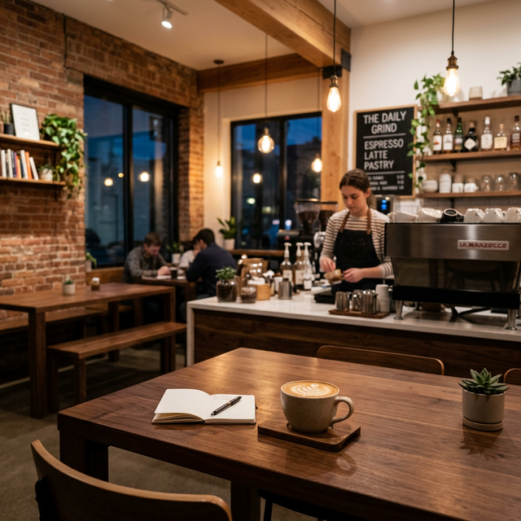

Our Story
Founded in 2012, coffee beans started with a simple dream: to bring the world's most exceptional coffee beans to our neighborhood. We believe that coffee is more than just a drink—it's a ritual, a moment of peace, and a way to connect.
Our beans are ethically sourced and roasted in small batches to preserve their unique flavor profiles. From our humble beginnings as a small cart, we've grown into a community hub where everyone is welcome.
Our Mission
To provide a premium coffee experience that inspires and delights our customers while supporting sustainable farming practices and local communities.